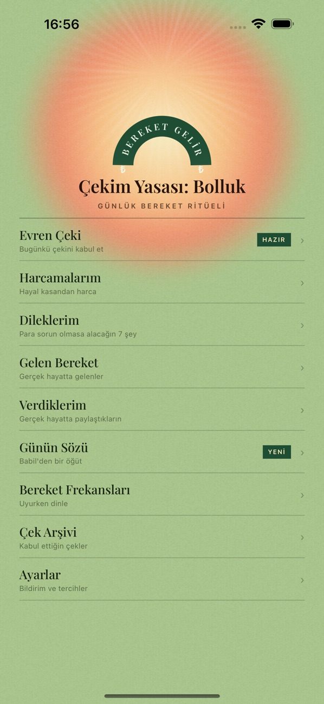
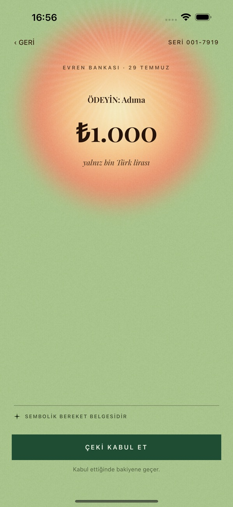
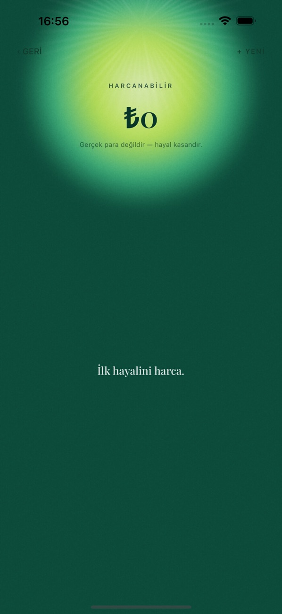
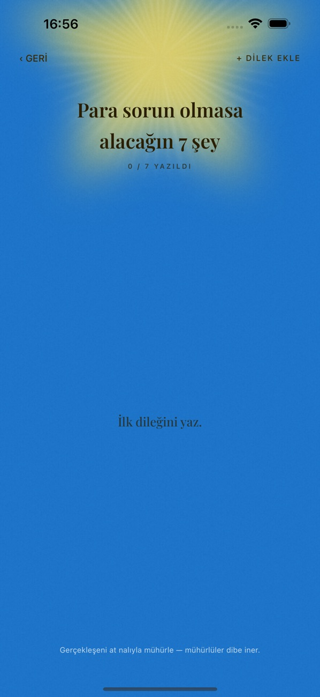
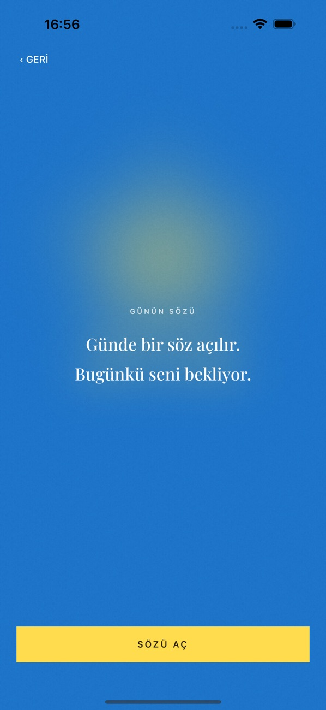
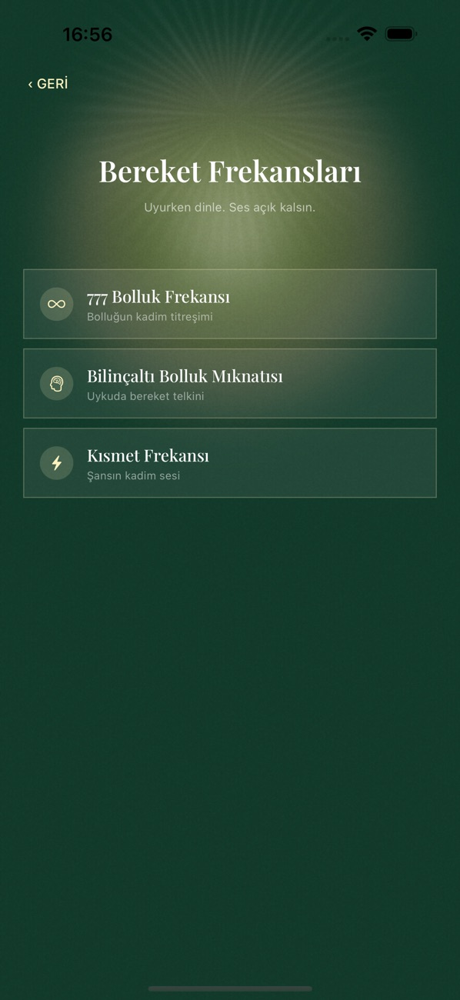
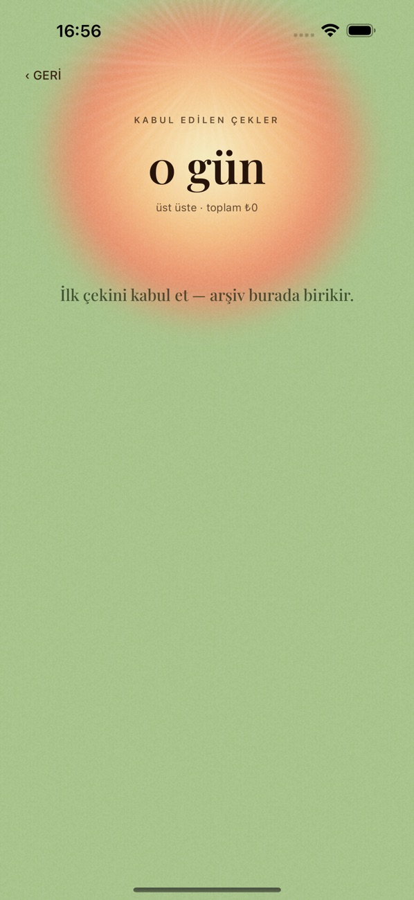
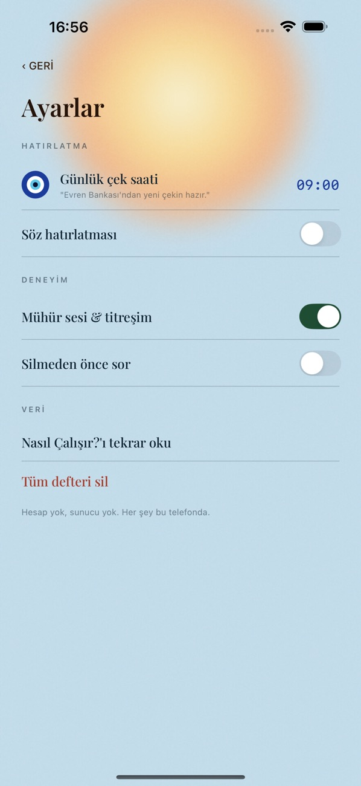

{kind=link}
{kind=link}
{kind=link}
{kind=link}
{kind=link}
{kind=link}
{kind=link}
{kind=link}
Build a daily ritual
Start with a daily thought, accept your virtual universe check, and set an intention.
LIFESTYLE / IPHONE
Begin the day with an intention. Write down your wishes, notice the good around you, and build a daily ritual that feels like yours.

01 / 08
02 / 08
03 / 08
04 / 08
05 / 08
06 / 08
07 / 08
08 / 08Scroll to explore. Select a screenshot to take a closer look.
A Turkish-language motivation app inspired by abundance rituals. Keep a journal of your wishes, gifts, and everyday moments of gratitude. Wind down with calming audio, and follow your routine through your personal archive.
For motivation and personal reflection; the app does not promise financial outcomes.
Start with a daily thought, accept your virtual universe check, and set an intention.
Record your wishes, acts of generosity, and the good things that come your way.
Listen to calming sounds and follow your daily practice in the archive.
HERE TO HELP
Questions, feedback, or something not working?
Get in touch and tell us about it.